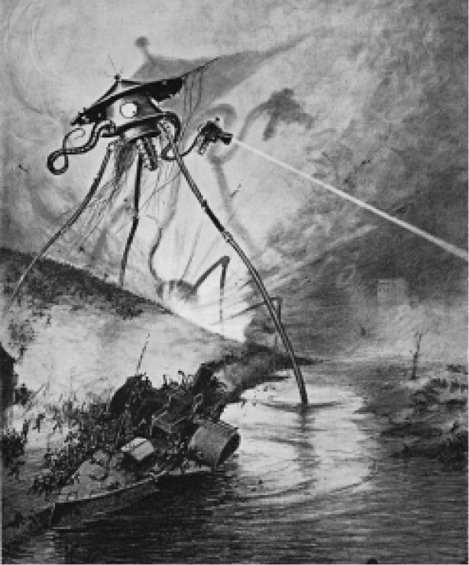

由于I.F.克拉克的开创性工作，我们现在知道，自1871年起至第一次世界大战，即帝国主义的巅峰时期，产生了数量极其多的未来战争叙事。虽然以前也有此类叙事，未来战争这个亚类型还是源自切斯尼的《杜金战役》，这部小说在普法战争刚刚结束的时候就出版了。这部描述德国入侵英国本土的小说在很多国家都有读者。关于未来世界政治格局、大众通讯、军事技术的描写在小说叙事中融为一体，形成了对备战需要的一种全国性警示。这些描写为后来的科幻小说确立了一种可以效仿的类型。未来战争叙事同兵棋活动有密切联系，兵棋是普鲁士人于19世纪20年代发明的，后来就通过计算机模拟而制度化了，有时候这些计算机模拟非常逼真，都难以同现实区分开来。这种困难以及对军方计算机系统可能会失控的担心，构成了1983年的电影《战争游戏》的中心主题。
19世纪末至20世纪初的许多未来战争叙事都被遗忘了，但是在它们的时代，它们是帝国的希望与恐惧的戏剧性代表。比如说，路易斯·特雷西的《美国皇帝》（1897）描述了一名富有的、野心勃勃的美国阴谋家如何登上法兰西皇帝之位。更富有幻想色彩的是古斯塔夫斯·W.波普的《火星之旅》（1894），它描述了美国宇航员飞往这颗红色行星的旅程。在火星上宇航员们发现了一个拥有发达技术的先进种族，这个种族非常友好，他们的火星海军旗舰甚至升起了星条旗向这些访客们致敬。
可以说，侵略者的身份是不断变化的。在克利夫兰·莫菲特的《征服美国》（1916）中，德国人对美国发动了侵略，而弗兰克·R.斯托克顿的《战争辛迪加》（1889）却描写了美国和英国之间的战争。这些差异表明世纪之交的帝国主义政策具有多变性，但是有些主题是经常回归的。美国的技术知识和发明创造能力同欧洲大国更为保守的军事组织之间通常处于竞争状态，最后的胜利常常属于“盎格鲁–撒克逊人”，也就是说，属于英国和美国的同盟。此类叙事中有很多都隐藏着种族主义，这在描写所谓的“黄祸”时越发明显。M.P.希尔1898年的小说《黄祸》描写了黄种人统治世界的残暴计划，他们计划让欧洲大国互相攻击，然后待这些国家元气大伤时，发动对欧洲的入侵。读者被告知，当他们蹂躏法国的时候，“这些瘦骨嶙峋的黄种人兽性大发，暴虐无道”。后来军队中瘟疫流行，上百万人呜呼哀哉，才让西方从军事失利中缓过了气，恢复了种族之间的势力均衡。希尔夸张的描写比起G.G.鲁伯特的预言还不算那么耸人听闻，后者是俄克拉何马州的一名牧师，在他写的《黄祸，或东西方决战》（1911）中，东西方军队在未来发生了一场大战，而西方最终会打赢，坐实《圣经》的预言。
这些未来战争小说为读者提供了最著名的侵略战争小说——H.G.韦尔斯的《世界之战》（1898）的相关背景。在这部小说中，有两个意象挑战了作者所处时代的自满态度。第一，小说一开头，读者便得知地球上的人类正处于火星人的观察之中，好像地球人是低等物种一样。第二，当火星人入侵地球的时候，他们的着陆地点瞄准了帝都伦敦。正如大量的评论家所指出的，韦尔斯毫不含糊地颠覆了帝国叙事，并提醒读者不要忘了塔斯马尼亚人的命运——他们在19世纪70年代已经灭绝了，而英国人也可能重蹈覆辙。韦尔斯笔下的火星人有两重性，一重是机械性，另一重是生物性。最后证明帝国的主力无法摧毁他们，因为他们在陆地和海洋上都具有高度机动性，同时也因为他们具有致命的新式武器——热线。韦尔斯小说的初版插图反复展示了倾斜的场景，像是暗示英国在与火星人的战争中总体上失去了平衡。

图14 H.G.韦尔斯《世界之战》（1898）的初版插图
在他们的金属外壳之下，火星人的真面目如同章鱼一样，长着大脑袋、萎缩的四肢，这副样子是韦尔斯对人类进化前景的想象。从这个意义来说，《世界之战》其实写了一个未来人类进攻现在人类的故事。乔治·帕尔在1953年把这部小说搬上了银幕，把主要背景设定在加利福尼亚。美国军方引爆了一颗原子弹，但对火星人却没有产生任何的防御作用，该情节让读者明白，未来战争叙事这个科幻文学亚类型是在冷战期间核冲突的背景下再次成为热门的。